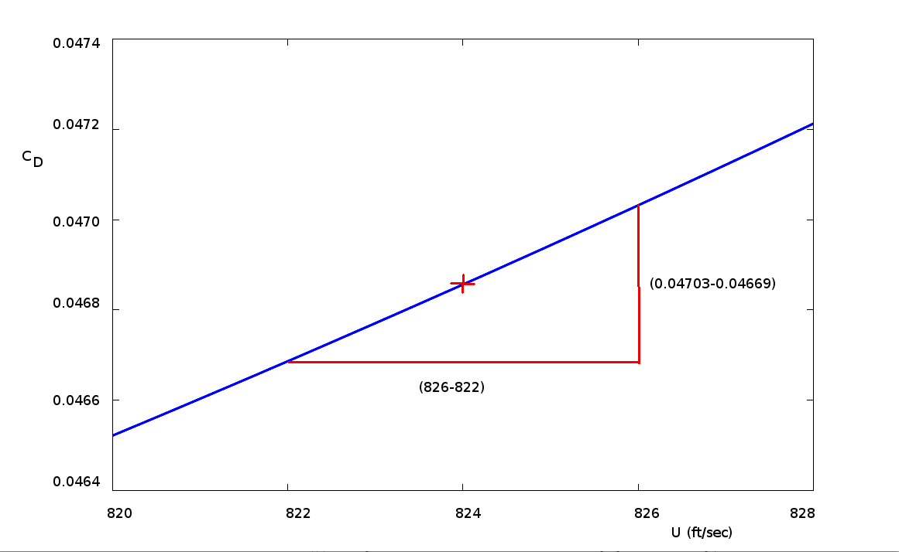
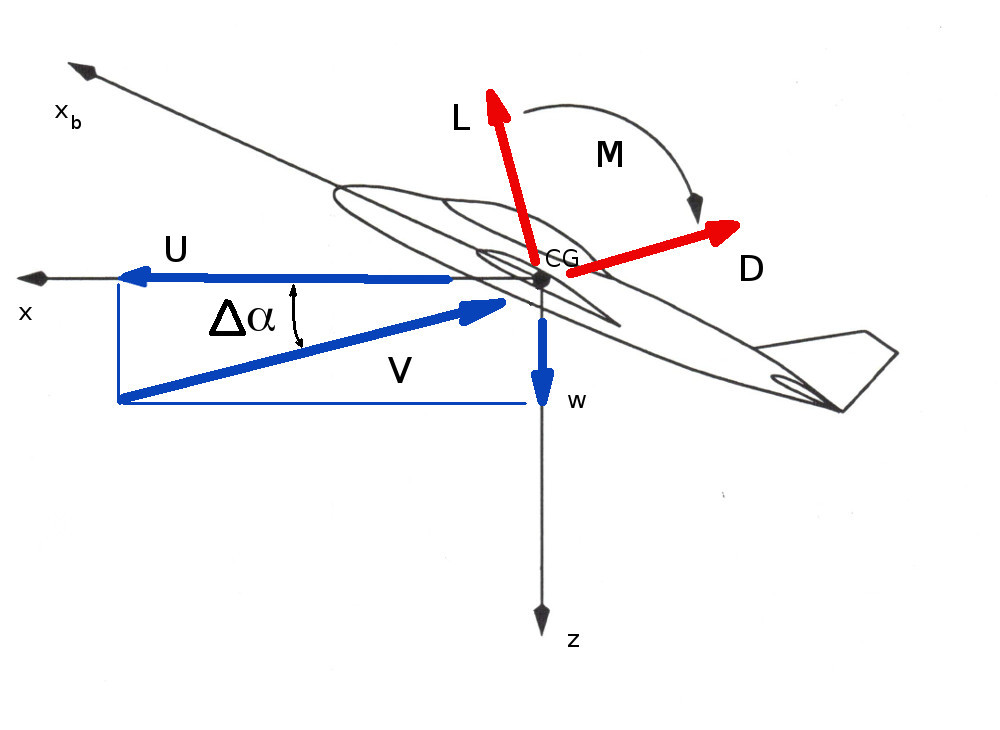

Calculation of Aerodynamics Derivatives
One of the most critical components of the longitudinal and lateral motion equations are the values for the aerodynamic derivatives, $X_u, X_w, X_q,Y_v$... etc. These will be determined by the geometry and performance of the vehicle and their values whether positive or negative can greatly influence the stability and handling qualities of the aircraft. The previous simplifications are used where the aircraft is assumed to be symmetric about the $x-z$ plane and motion is analysed with a body axes system aligned with the wind (or stability) axes. Calculations shown below are reasonable approximations but more accurate values may be required by undertaking flight or wind-tunnel testing or detailed CFD analysis.
X-Direction Aerodynamic Forces: $X_u, X_w, X_q$
$X_u$
Aerodynamic forces in the X-direction will be comprised basically of thrust and drag.$$F_x=T-D$$
$$X_u = 1/m {∂F_x}/{∂U}=1/m({∂T}/{∂U}-{∂D}/{∂U})$$
For a typical aircraft $D=1/2 ρ U^2 S C_D$ where $C_D≈C_{D0}+KC_L^2$. (See previous section on Aircraft Performance. The variation of thrust with forward speed for jet or gas turbine aircraft is minimal, so ${∂T}/{∂U}≈0$. For propeller driven aircraft there can be a greater variation, especially for fixed pitch propeller systems. $T=C_T ρ n^2 D^4$ where $C_T≈C_{T(static)}-aU$ for fixed pitch props and $C_T≈C_{T(cruise)}$ for variable pitch propellers. Thus for variable pitch systems ${∂T}/{∂U}≈0$ and for fixed pitch systems ${∂T}/{∂U}≈-aρn^2D^4$ where $a≈C_{T(static)}/U_{windmill}$. In all cases ${∂T}/{∂U}≪{∂D}/{∂U}$.
$${∂D}/{∂U}=1/2ρS{∂U^2C_D}/{∂U}=1/2ρS({2UC_D+U^2{∂C_D}/{∂U})=ρSU(C_D+U/2{∂C_D}/{∂U})$$
Hence
$$X_u=-{ρSU}/m(C_D+U/2 C_{D_U})+1/m{∂T}/{∂U}$$where simplifying notation $C_{D_U}={∂C_D}/{∂U}$ has been used.
For Example, a medium size transport aircraft weighting 230,000 lb, wing area: 2600 ft2, wing span: 142.3 ft, flying at 824 ft/sec (Mach 0.84) at an altitude of 33,000 ft will give the following results.
Assuming CDo≈0.02 and wing efficiency, e≈0.8,
$$C_L={230000}/{1/2 × 0.000795 × 824^2 × 2600}=0.3277$$$$AR={142.3^2}/2600=7.79$$
$$C_D={0.02+1/{0.8 × π × 7.79} × 0.3277^2}/√{1-0.84^2}=0.04686$$

Assuming that lift is approximately constant during the disturbance and that drag coefficient change is mainly due to Mach number and lift coefficient variations, then by plotting variation in CD in the neighbourhood of the set velocity, an estimate for CDU can be found,
$$C_{D_U}=(0.04703-0.04669)/(826-822)= 0.000085$$
For the turbo fan engines used on the aircraft, ${∂T}/{∂U}≈0$ so that,
$$X_u=-{0.000795 × 2600 × 824}/{230000\/32.2}(0.04686+824/2 ×0.000085)=-0.0195 \text" "(\sec^{-1})$$
Measured flight test data for this vehicle gives Xu=-0.014. It is clear from the accuracy of the above calculation, that second order effects are significant so that rough estimate calculations can only give ballpark values and not an exact estimation of the derivatives.
Xw
A vertical disturbance velocity w when combined with the initial forward speed of the aircraft U will cause a disturbance to the angle of attack, Δα, of the aircraft. As the axis system is initially aligned with the wind axes, a new position of the relative wind will result. The magnitude of the relative wind will be $V= √{U^2+w^2}$ and the lift and drag force on the aircraft will be rotated by an amount equal to the disturbance angle of attack, Δα
The X-direction force on the aircraft will be
$$F_{x} = T + (L+ΔL)\sin(Δα)-(D+ΔD)\cos(Δα)$$
where $ΔL$ and $ΔD$ are the increments in lift and drag due to the vertical perturbation in angle. As the disturbance velocity, w, is small, $V≈U$ and $Δα≈w/U$, $\sin(Δα)≈Δα$ and $\cos(Δα)≈1$ so that
$$F_x=T-D+LΔα-ΔD$$
where the smaller disturbance product term $ΔLΔα$ is considered negligible. The change in X-direction force due to a perturbation angle
$$ΔF_x=LΔα-ΔD$$
as T-D represents the initial trim balance before a disturbance. Thus
$$X_w=1/m{∂F_x}/{∂w}=1/m{∂F_x}/{∂Δα}{∂Δα}/{∂w}=1/{mU}{ΔF_x}/{Δα}$$
assuming that changes can be considered linear for small perturbations. Thus
$$X_w=1/{mU}(L-{ΔD}/{Δα})=1/{mU}(L-{∂D}/{∂α})$$
Substituting for lift and drag coefficients gives,
$$X_w={ρSU}/{2m}(C_L-{∂C_D}/{∂α})={ρSU}/{2m}(C_L-C_{D_α})$$
Continuing with the example of the transport aircraft under cruise conditions, with $C_L=0.3277$ and the assumption that drag coeficient can be described by an approximate polar, $C_D={(C_{D_0}+KC_L^2)}/√{1-M^2}$, then
$${∂C_D}/{∂α}={2K}/√{1-M^2}{∂C_L}/{∂α}=1/√{1-0.84^2}2/{0.8 × π × 7.79} × {2 π}/{(1+2/{0.8 × 7.79})}=0.30146$$
$$X_w={0.000795 × 2600 × 824}/{2 × 230000 \/ 32.2}(0.3277-0.30146)=0.00313\text" "(\sec^{-1})$$
Again this is a rough approximation in comparison to the measured derivative from flight testing of Xw=0.0043.
Xq
A pitch rate disturbance applied to the aircraft will predominantly affect the tailplane flow. A resulting downward disturbance velocity of $w_t=q×l_t$ will be created, where lt is the distance from tailplane aerodynamic center to the aircraft C.G. The analysis of this disturbance velocity, wt, at the tailplane will give a prediction of Xq.